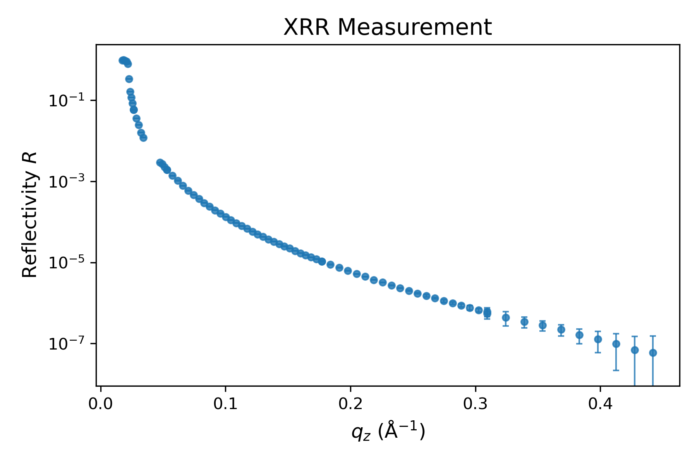

Import & plot data#
The next cell imports the file SIRIUS_2024_09_20_4446-4530_XRR.dat located in the raw_data folder. This file is a text-based dataset acquired on SIRIUS by measuring the X-ray reflectivity of a simple water–helium interface. Run the cell as is. If you wish to use it with your own data, simply replace the file path.
# Path to the XRR file
path_XRR = 'raw_data/SIRIUS_2024_09_20_4446-4530_XRR.dat'
# Create folder to store the results
filename = os.path.splitext(os.path.basename(path_XRR))[0]
folder_path = f"processed_data/{filename}"
os.makedirs(folder_path, exist_ok=True)
# Import and convert to appropriate format
column_names = [col.lstrip("#") for col in open(path_XRR).readline().split()]
data_exp_temp = pd.read_csv(path_XRR, delim_whitespace=True, comment="#", names=column_names)
qz_exp = data_exp_temp["qz(nm-1)"].to_numpy() / 10. # Convert nm⁻¹ to Å⁻¹
R_exp = data_exp_temp["refl"].to_numpy()
R_err_exp = data_exp_temp["err_refl"].to_numpy()
# Filter out points where R_exp < 0
valid_mask = R_exp > 0
qz_exp = qz_exp[valid_mask]
R_exp = R_exp[valid_mask]
R_err_exp = R_err_exp[valid_mask]
# Construct the data for refnx
data_exp = Data1D(data=(qz_exp, R_exp))
...
The text file contains several columns. We extract only those corresponding to the wavevector \(q_z\), the reflectivity \(R\), and its absolute error \(R_{\rm err}\). The wavevector \(q_z\) is converted to units of \(A^{-1}\), as required by refnx.
Note that a basic background subtraction has already been applied to the raw data from SIRIUS, typically by selecting ROIs on the 2D detector (e.g., from the left/right or top/bottom of the reflected beam). If a more advanced background subtraction is needed, it should be performed beforehand. A filter is also applied here to remove any data points where the reflectivity is negative—often a consequence of background subtraction.
Finally, while the fitting procedure shown below is typically more robust when error bars are ignored, you can include them by constructing the data object as follows:
data_exp = Data1D(data=(qz_exp, R_exp, R_err_exp))
